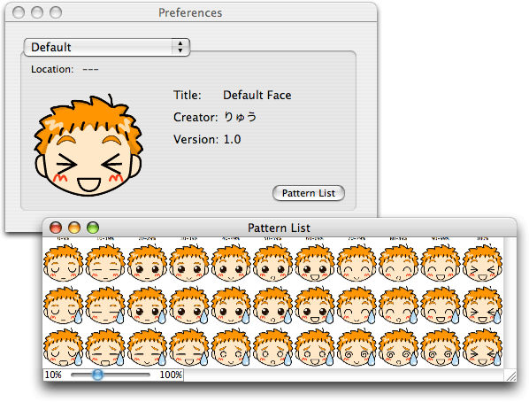
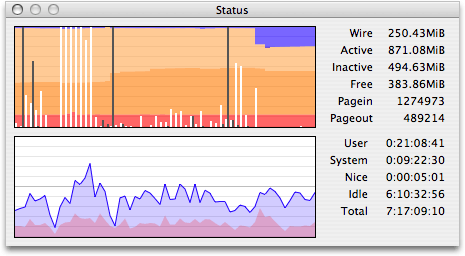
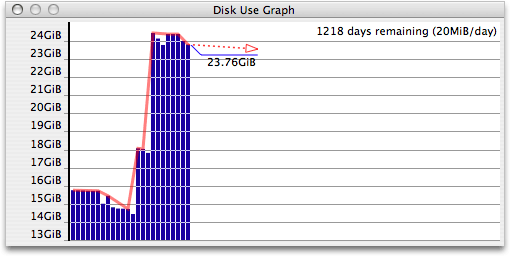
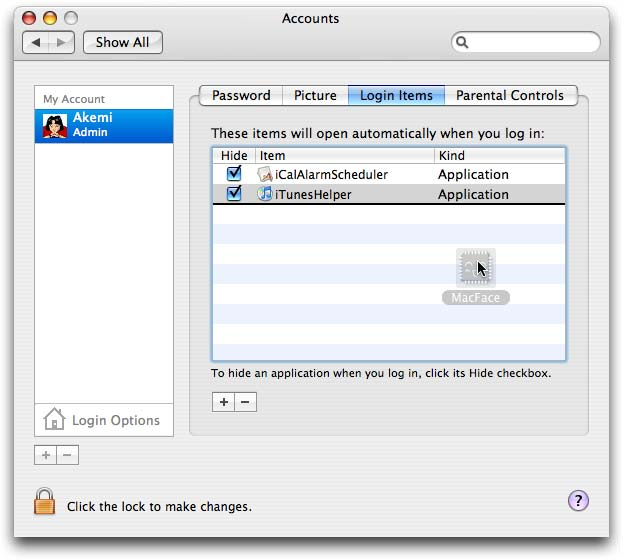

MacFace Mac Software
English home of the cutest Mac activity monitor for your Dock.
MacFace is a little freeware application by Ryu (J) that acts as an activity monitor, informing you of how hard your processor is working and current RAM state. It's different from Activity Monitor and the many similar applications in that it does this by displaying a cute (and generally anime-style, though that's not technically a requirement) little face in your Dock.
MacFace may not be the best CPU monitor out there, but it's definitely the cutest.
It is a MacOS X application only; there is (somewhat ironically) a Windows port under development, but I know nothing about it and it's currently Japanese-only.
This isn't the official MacFace web page--that's at Ryu's site. We volunteered to translate the app and its documentation into English because Akemi immediately fell in love with it and wanted to help make it available to those who don't speak Japanese.
Download MacFace
Download MacFace 1.3.1 (287K .dmg; includes a full English translation)
Since the official MacFace page is in Japanese, we've gotten permission to link directly to the download.
The download includes the application, extensive help files, more detailed information about what MacFace does and how it does it, and documentation on the .mcface file format so you can make your own face files. As of version 1.3.1, it includes an English translation of all of the above.
Why Use MacFace?
MacFace's main purpose is to display a face in your Dock that changes its expression based on the RAM and CPU use of your computer. Exactly how it does this will depend on the face you're using--it comes with two, you can download more, and detailed instructions on how to make your own are included with MacFace.

Generally speaking, the more active the face looks, the harder your CPU is working. If the face looks stressed, it indicates that there's not much RAM available. And there's an indicator that shows if paging in or out is occurring, as well.
It also has a couple of additional features. It can display a window with a live, color-coded graph of the last minute or so of CPU and RAM use (white lines indicate pageins, black ones pageouts).

And, it also can display a window showing the historical trend of free space on your primary hard drive. It's not just a bar graph, though--it will add a trendline estimating the rate at which free space is decreasing (or increasing, rare as that might be), with an estimate of how long you've got until your drive is full.

MacFace is a Universal app and works equally well on PPC and Intel systems. It is fully compatible with 10.6 Snow Leopard, and should work on OSX versions all the way back to 10.1. It only takes about 500K on disk, 7MB of RAM, and when there aren't graphs being displayed it uses essentially no CPU (under 0.1% on a 2GHz Core Duo), and well under 1% even with both graphs onscreen. What's not to love?
Installation Instructions
The installation process is easy:
- First, download MacFace: MacFace-1.3.1.dmg (287K).
- Copy the MacFace application into your Applications folder.
- If the MacFace-1.3.1.dmg file did not automatically mount and open (which it should if you're using Safari), double click it in the Finder.
- Go to the _MacFace-1.3.1 disk image that mounted and drag the MacFace application onto the Applications folder in the Finder.
- If you want to use the extra face file MacFace comes with (kikiki-rin.mcface), copy it to somewhere on your drive (your Documents folder, for example).
- Unmount (eject) the disk image when you're done.
- You're done! Open MacFace and enjoy!
Make MacFace Launch Automatically
If you want MacFace to open automatically every time you log in to your account, do this:
- Open System Preferences (under the Apple Menu), and go to the Accounts preference pane.
- Click on the Login Items tab for the user you want it to automatically open for.
- Add MacFace to the Login Items list (either click the + button and navigate to the MacFace application in the dialogue that appears, or just drag the application's icon into the list). 
- Make sure the "Hide" checkbox next to MacFace is not checked, or MacFace will be invisible (and therefore totally useless).
- The next time you log in, MacFace should automatically launch.
- If you want MacFace to be in a different location in your Dock, just drag it to wherever you want, and the OS will remember that spot.
More Face Files
In addition to the default face, MacFace comes with Kikiki-rin (it's in the disk image along with the application--don't forget to copy it too if you want to use it!), but of course you want more. Here's a short list of some Face Files available on the web to get you started. They're all currently in Japanese, but the downloads are pretty obvious even if you don't read Japanese and of course the faces themselves are in the universal language of anime.
If you find (or create!) more faces, please drop us a note so we can add them to the list. We can even host your face, if you make one and have nowhere to put it.
- Noritama-kun, by Ashiberu (there are both "normal" (PNG) and "TIFF" versions to download; they're functionally identical, so you might as well use the non-TIFF one since it's smaller)
- Assorted, by Mayuki Sawatari (four different faces; download via the first link under the Download heading on each page)
- Yuki Nagato (this face was inspired by a Windows application by Mayuki Sawatari, in turn inspired by The Melancholy of Haruhi Suzumiya; it was at one point removed due to official complaints by the copyright holder, but is back up)
barton, thoroughbred, and palomino, by Satoshi(three formerly-available faces that have since vanished from the author's site)
If any of the instructions here are unclear, please let us know so we can revise them. Otherwise, enjoy!